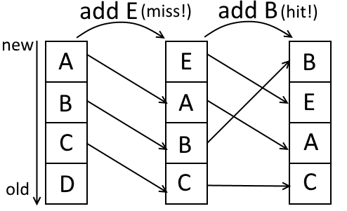

Click on one of the buttons above for more information!
The LRU cache used in cache analysis is a fully associative cache with a least-recently-used replacement policy.
The cache being fully associative means that any address of a variable can be stored in any location in the cache,
meaning the memory address of the data or element does not affect the placement of the data in the cache. The
cache using a least-recently-used replacement policy means that the data that has been used the least recently will
be replaced by new data when new data needs to be put in the cache while the cache is full.
The state of the cache changes depending on the incoming variables. The cache can be thought of of having a "priority
list" that tracks the "age" of all the elements currently stored in the cache. When an element in the cache, for
example data X, is used in the program, the age of X is changed to 0 in the priority list. X ages by 1 when any
other element is used that is not in the cache or has a higher age than X. When new data needs to be stored inside
a full cache, the element with the highest age will be replaced by the new data. A newly placed element in the cache
always has an age of 0. Every time a reference to the memory is made in a program, the LRU cache updates its currently
stored information and/or its priority list.

When a new variable E comes in that is not yet currently in the cache, a cache miss occurs. This means that the data
on the bottom (position with the highest age) of the priority list is tossed out of cache and the new variable E is
added to the cache. The priority list changes accordingly: E is now at the top with an age of 0, The variables B and
C age by one position as a result of the addition of E at the top of the list. D now has an age equal or higher than
the cache size and thus D does not fit in the cache anymore and is removed from the list (and cache).
Now, when another variable B that is already currently in the cache comes in after the previous addition of variable
E, a cache hit occurs. This means that only the priority list needs to be updated: after using variable B, B should
now be at the top of the priority list with an age of 0. Variables E and A age by one accordingly. C stays where it
is as it is still referenced even less recently than variable B was before the update. The fact that no new data has
been added to the cache can be verified: both priority lists before and after the update contain the same data.
must-cache information has not yet been implemented! Sorry!
may-cache information has not yet been implemented! Sorry!
Control-flow graph (CFG) display
Click on "Next step" to continue!
CFG editing controls
Create new node
Element:
Node ID:
Selections
Selected:
Node 1: -
Node 2: -
Edge: -
CFG Properties
size: 4
Use the controls above to edit the CFG to the left!